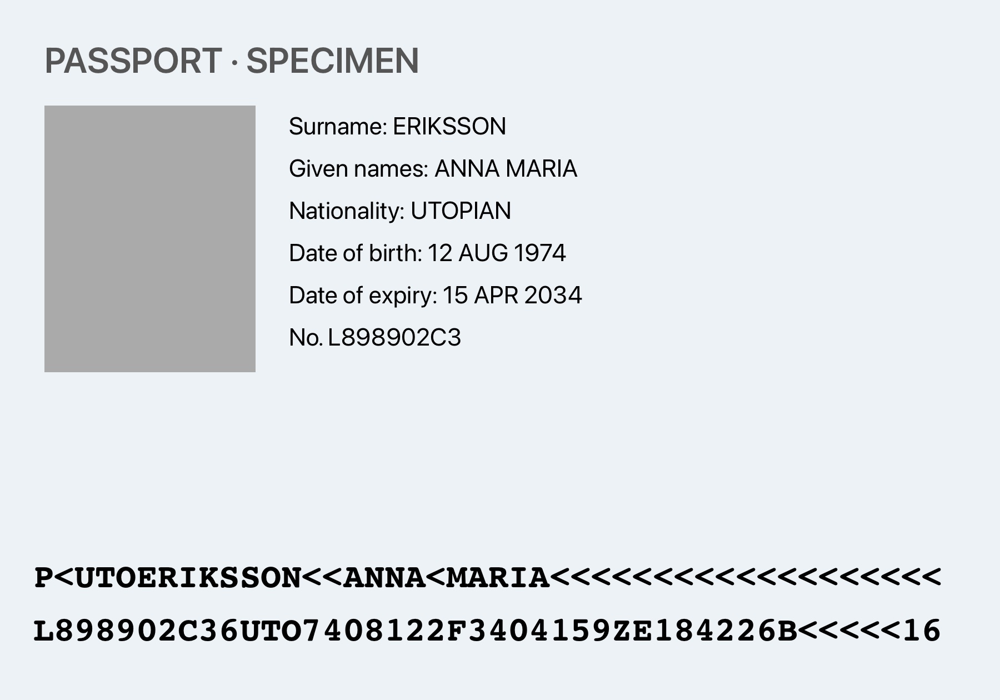

Get the specimen
- As a picture: on the iPhone, touch and hold the image below and choose Save to Photos (or Add to Photos).
- As a PDF: download specimen.pdf; Safari saves it to Files › Downloads.

Try it in Pocketdocs
- In Library, tap + (Add a document).
- Choose Choose from Photos and pick the saved picture, or Import PDF from Files and pick specimen.pdf.
- Pocketdocs reads the details on the iPhone. Check them and tap Save.
- Open the document and tap a detail to copy it.
Chip reading needs a physical passport or ID card with a chip, so it can’t be tried with this specimen.